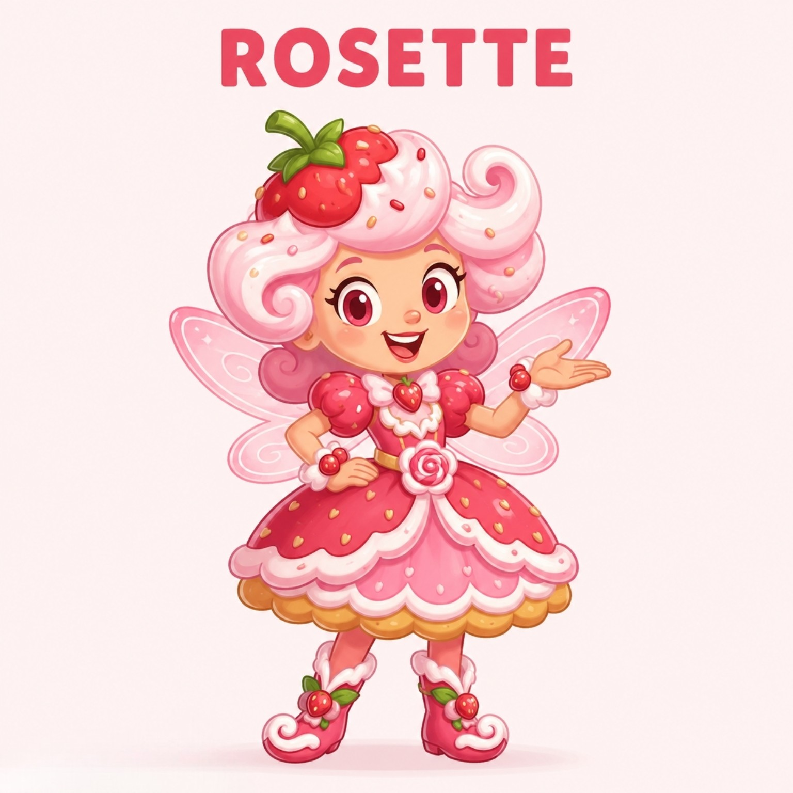
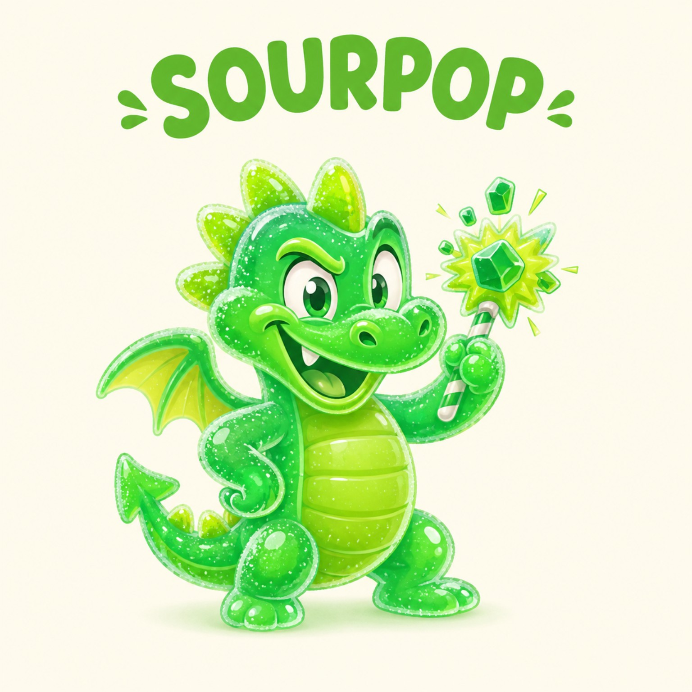

CCD = COZY CORE DIET
COMFORT-FOOD ENERGY WITH TRACKING THAT STAYS VISUAL, FLEXIBLE, AND ACTUALLY FUN TO USE.
THIS MULTI-PAGE GITHUB WEBSITE TURNS FOOD, RECIPES, MOVEMENT, WATER, FASTING, RESTAURANT LOGS, AND CHARACTER SHOPPING INTO A COLORFUL INTERACTIVE WORLD — WITH 3D MOTION, ACTIVE UI FEEDBACK, AND NO SINGLE-PAGE LANDING-PAGE FEEL.


COMFORT-FOOD ENERGY WITH TRACKING THAT STAYS VISUAL, FLEXIBLE, AND ACTUALLY FUN TO USE.
KNOWN FOODS, SOTDs, AND EXERCISES AUTO-CALCULATE. MANUAL NUTRITION IS RESERVED FOR NEW RESTAURANT FOODS YOU ADD YOURSELF.
PLAIN HTML + CSS + JAVASCRIPT. DATA SAVES LOCALLY IN YOUR BROWSER WITH LOCALSTORAGE.
SEPARATE PAGES, DRAGGABLE DETAILS, 3D TILT MOTION, SCROLL-WHEEL TIME PICKERS, SLIDERS, BATTLES, LAB MIXING, BERRY BRUNCH WISHLISTS, AND COLOR THEMES.